GridView의 속성 editModeEvent와 속성 editModeEventIcon의 설정 값 비교 예제입니다. 두 속성은 마우스를 이용하여 셀을 수정 모드로 변경할 때 적용할 이벤트를 지정하는 기능을 제공합니다.
속성별 적용 범위는 아래와 같습니다. - editModeEvent : 속성 viewType의 설정 값이 icon이 아닌 컬럼 - editModeEventIcon의 : 속성 viewType의 설정 값이 icon인 컬럼
속성은 GridView와 컬럼에 각각 설정할 수 있으며, 컬럼의 설정이 우선합니다.
본래 속성 viewType의 설정 값이 icon으로 지정된 경우 수정 모드로 진입하는 마우스 이벤트를 클릭으로 고정되어 제공되었습니다. 19년 1월 이후 하위 호환성의 문제로 속성 editModeEventIcon을 추가하여 마우스 이벤트를 변경하는 기능을 제공하게 되었습니다.
editModeEvent - ondblclick (기본 값)
editModeEvent - onclick
editModeEvent - onsecondclick
editModeEvent 설정 값이 GridView와 컬럼이 다른 예시
editModeEventIcon - onclick (기본 값)
editModeEventIcon - ondblclick
셀을 더블 클릭하면 수정 모드로 변경됩니다.
셀이 선택됩니다.
[브라우저(Chrome) 실행 예시 - 셀을 클릭]
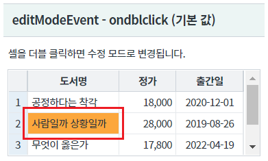
셀이 수정 모드로 변경됩니다.
[브라우저(Chrome) 실행 예시 - 셀 수정 모드]
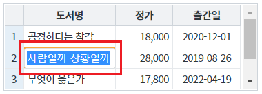
셀을 클릭하면 수정 모드로 변경됩니다.
셀이 수정 모드로 변경홥니다.
[브라우저(Chrome) 실행 예시]
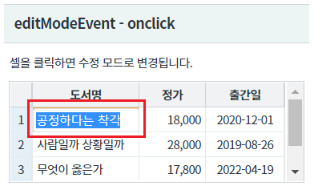
셀이 선택된 상태에서 클릭하면 수정 모드로 변경됩니다. 선택되지 않은 셀을 클릭하면 셀이 선택되고, 이후 동일 셀을 클릭하면 수정 모드로 변경됩니다.
셀이 선택됩니다.
[브라우저(Chrome) 실행 예시 - 셀을 클릭]
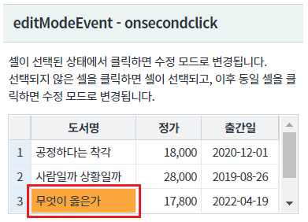
셀이 수정 모드로 변경됩니다.
[브라우저(Chrome) 실행 예시 - 셀 수정 모드]
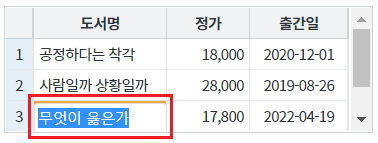
GridView의 전체 설정은 셀을 더블 클릭하면 수정 모드로 변경됩니다. 단, 컬럼 [정가]는 셀을 클릭하면 수정 모드로 변경됩니다.
셀이 선택됩니다.
[브라우저(Chrome) 실행 예시 - 셀을 클릭]
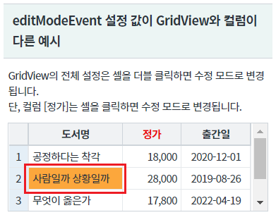
셀이 수정 모드로 변경됩니다.
[브라우저(Chrome) 실행 예시 - 셀 수정 모드]
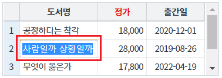
셀이 수정 모드로 변경됩니다.
[브라우저(Chrome) 실행 예시 - 셀 수정 모드]
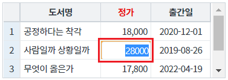
컬럼 [분류], [출간일]은 셀을 클릭하면 수정 모드로 변경됩니다. 속성 editModeEvent은 ondblclick으로 설정되어 있습니다. 컬럼 [도서명]은 셀을 더블 클릭하면 수정 모드로 변경됩니다.
셀이 수정 모드로 변경됩니다.
[브라우저(Chrome) 실행 예시]
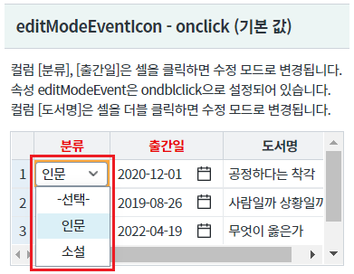
컬럼 [분류], [출간일]의 셀을 더블 클릭하면 수정 모드로 변경됩니다. 속성 editModeEvent은 ondblclick으로 설정되어 있습니다. 컬럼 [도서명]은 셀을 더블 클릭하면 수정 모드로 변경됩니다.
셀이 선택됩니다.
[브라우저(Chrome) 실행 예시]
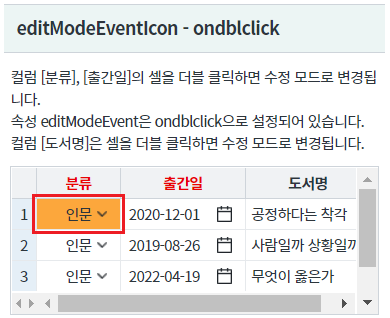
셀이 수정 모드로 변경됩니다.
[브라우저(Chrome) 실행 예시 - 셀 수정 모드]
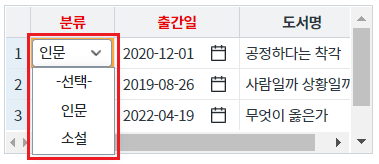
STEP1. GridView의 속성을 정의합니다.
[필수] editModeEvent="옵션 값" //[default: ondblclick, onclick, onsecondclick] 마우스를 이용하여 셀 수정 모드로 진입할 때 사용할 이벤트.
(옵션 값 설명)
onclick : 셀을 클릭할 경우 수정 모드로 진입.
예시) editModeEvent="onclick"
ondblclick : 셀을 더블 클릭할 경우 수정 모드로 진입.
예시) editModeEvent="ondblclick"
onsecondclick : 셀 클릭 후 다시 클릭하면 수정 모드로 진입.
예시) editModeEvent="onsecondclick"
속성 editModeEvent는 GridView와 컬럼에 각각 설정할 수 있습니다.
GridView와 컬럼에 모두 설정한 경우 컬럼의 설정이 우선합니다.
그림 1.웹스퀘어5 SP5 스튜디오의 Property View(속성창) 예시
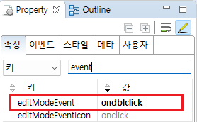
[소스 코드 예시]
<!-- gridView 의 소스 본문 예시 --> <w2:gridView editModeEvent="ondblclick" dataList="data:dlt_books" style="height: 100px;"> <!-- 중략 --> </w2:gridView> <!-- gridView 의 소스 본문 예시 - 컬럼에 속성을 지정 --> <w2:gridView editModeEvent="ondblclick" dataList="data:dlt_books" style="height: 100px;"> <!-- 중략 --> <w2:gBody id="gBody1" style=""> <w2:row id="row2" style=""> <w2:column editModeEvent="onclick" inputType="text" id="price"> </w2:column> <!-- 중략 --> </w2:row> </w2:gBody> </w2:gridView>
STEP1. GridView의 속성을 정의합니다.
[필수] editModeEventIcon="옵션 값" //[default: onclick, ondblclick] viewType="icon"인 컬럼에서 마우스를 이용하여 셀 수정 모드로 진입할 때 사용할 이벤트.
(옵션 값 설명)
onclick : 셀을 클릭할 경우 수정 모드로 진입.
예시) editModeEventIcon="onclick"
ondblclick : 셀을 더블 클릭할 경우 수정 모드로 진입.
예시) editModeEventIcon="ondblclick"
속성 editModeEventIcon는 GridView와 컬럼에 각각 설정할 수 있습니다.
GridView와 컬럼에 모두 설정한 경우 컬럼의 설정이 우선합니다.
그림 2.웹스퀘어5 SP5 스튜디오의 Property View(속성창) 예시
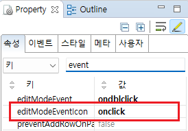
[소스 코드 예시]
<!-- gridView 의 소스 본문 예시 --> <w2:gridView editModeEventIcon="onclick" dataList="data:dlt_books" style="height: 100px;"> <!-- 중략 --> </w2:gridView> <!-- gridView 의 소스 본문 예시 - 컬럼에 속성을 지정 --> <w2:gridView editModeEventIcon="onclick" dataList="data:dlt_books" style="height: 100px;"> <!-- 중략 --> <w2:gBody id="gBody1" style=""> <w2:row id="row2" style=""> <w2:column editModeEventIcon="ondblclick" viewType="icon" inputType="select" id="categoryLabel" > <!-- 중략 --> </w2:column> <!-- 중략 --> </w2:row> </w2:gBody> </w2:gridView>
editModeEvent
editModeEventIcon
viewType
[웹스퀘어5 SP5 개발 가이드] GridView
링크 : https://docs1.inswave.com/sp5_user_guide/bc10c1b82c9a2a0b#e1c4658baf7e726f
[웹스퀘어5 SP5 개발 가이드] GridView editModeEvent & editModeEventIcon
링크 : https://docs1.inswave.com/sp5_user_guide/86bdcf48029b958b#2f274862391a80a1
GridView editModeEvent & editModeEventIcon
링크 : https://youtu.be/-aoxUkqpDG8
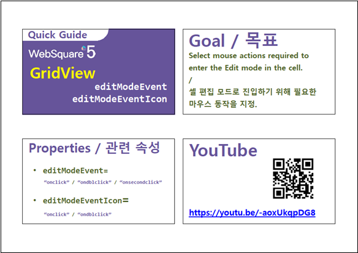